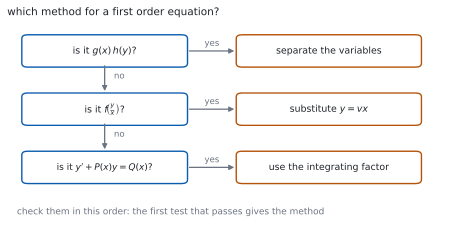
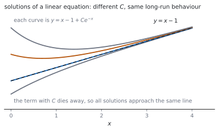

HL 5.18b — Homogeneous equations and the integrating factor（同次形と積分因子）
- 変数分離が使えない式を見分けられる。
- 同次形（homogeneous）\(\dfrac{\mathrm{d}y}{\mathrm{d}x} = f\!\left(\dfrac{y}{x}\right)\) に気づける。
- \(y = vx\) と置いて、変数分離できる形に直せる。
- \(1\) 次の微分方程式 \(y'+P(x)y = Q(x)\) を見分けられる。
- 積分因子（integrating factor）\(e^{\int P\,\mathrm{d}x}\) を求められる。
- 積分因子をかけて、左辺を \(1\) つの導関数にまとめられる。
The idea
1. When separation fails（変数分離が使えないとき）
\(\dfrac{\mathrm{d}y}{\mathrm{d}x} = x+y\) は、右辺が和なので分けられません（HL 5.18a）。
そういう式のために、\(2\) つの方法が用意されています。

上から順に試すのが確実です。変数分離がいちばん軽く、積分因子がいちばん重い計算になります。
2. Homogeneous equations（同次形）
シラバスは、こう書いています。
Homogeneous differential equation \(\dfrac{\mathrm{d}y}{\mathrm{d}x} = f\!\left(\dfrac{y}{x}\right)\) using the substitution \(y = vx\).
右辺が \(\dfrac{y}{x}\) だけの式で書けるとき、同次形といいます。
\[ \frac{\mathrm{d}y}{\mathrm{d}x} = \frac{x+y}{x} = 1+\frac{y}{x} \]
これは \(f(u) = 1+u\) の形です。分母・分子を \(x\) で割って確かめるのが手です。
3. The substitution \(y = vx\)（\(y = vx\) と置く）
\(v\) も \(x\) の関数なので、積の微分公式を使います。
\[ y = vx \quad \Longrightarrow \quad \frac{\mathrm{d}y}{\mathrm{d}x} = v+x\,\frac{\mathrm{d}v}{\mathrm{d}x} \tag{1}\]
\(\dfrac{\mathrm{d}v}{\mathrm{d}x}\) だけにしてはいけません。 \(v\) の項が残ります（第 1 節）。
4. After the substitution（置きかえたあと）
式 1 を入れると
\[ v+x\,\frac{\mathrm{d}v}{\mathrm{d}x} = f(v) \quad \Longrightarrow \quad x\,\frac{\mathrm{d}v}{\mathrm{d}x} = f(v)-v \tag{2}\]
となり、\(x\) と \(v\) に分けられます。
\[ \int \frac{1}{f(v)-v}\,\mathrm{d}v = \int \frac{1}{x}\,\mathrm{d}x \]
解いたら、最後に \(v = \dfrac{y}{x}\) をもどします。
5. Linear equations（\(1\) 次の微分方程式）
Solution of \(y' + P(x)y = Q(x)\), using the integrating factor.
\(y\) と \(y'\) がそれぞれ \(1\) 次で、かけ算されていない形です。
\[ \frac{\mathrm{d}y}{\mathrm{d}x}+P(x)\,y = Q(x) \tag{3}\]
\(x\dfrac{\mathrm{d}y}{\mathrm{d}x}+y = x^{2}\) のように \(\dfrac{\mathrm{d}y}{\mathrm{d}x}\) に係数が付いていたら、先に割ってください。
\[ \frac{\mathrm{d}y}{\mathrm{d}x}+\frac{1}{x}y = x \]
割る前に \(P\) を読むと、まったくちがう積分因子が出てしまいます。
6. The integrating factor（積分因子）
公式集の 5.18 の欄にあります。
Integrating factor for \(y'+P(x)y = Q(x)\)
\[ I = e^{\int P(x)\,\mathrm{d}x} \tag{4}\]
両辺に \(I\) をかけると、左辺が \(1\) つの導関数にまとまります（第 2 節）。
\[ \frac{\mathrm{d}}{\mathrm{d}x}\left(I\,y\right) = I\,Q(x) \tag{5}\]
あとは両辺を積分するだけです。

\(I\) を求めるときの積分定数は要りません。 \(1\) つ選べば十分です（第 3 節）。
7. The procedure（手順のまとめ）
\(1\) 次の微分方程式を解く手順です。
- \(\dfrac{\mathrm{d}y}{\mathrm{d}x}\) の係数を \(1\) にする。
- \(P(x)\) を読み、\(I = e^{\int P\,\mathrm{d}x}\) を求める。
- 両辺に \(I\) をかけ、左辺を \(\dfrac{\mathrm{d}}{\mathrm{d}x}(Iy)\) と書く。
- 両辺を積分し、\(y\) について解く。
\(3\) のところで \(\dfrac{\mathrm{d}}{\mathrm{d}x}(Iy)\) と書けるかを、毎回確かめてください。書けなければ、どこかがまちがっています。
TI-Nspire CX II の deSolve( は、同次形も \(1\) 次の形も扱えます。deSolve(y'=(x+y)/x and y(1)=0, x, y) のように入れます。
答えの形が自分のものとちがうことがあります。\(C\) の置き方がちがうだけのことが多いので、初期条件で値を入れてくらべてください。
答案には、式を書いてください。 同次形なら \(y = vx\) と置いた行、\(1\) 次なら \(I\) を求めた行を見せます。
Paper 1 では使えません。 このページの例題と演習は、すべて手で解けるようにしてあります。
Why it works
なぜ \(y = vx\) で分けられるようになるのか
同次形の右辺は \(\dfrac{y}{x}\) だけの式です。\(v = \dfrac{y}{x}\) と置けば、右辺は \(v\) だけの式になります。
左辺は 式 1 から \(v+x\dfrac{\mathrm{d}v}{\mathrm{d}x}\) です。\(v\) を右へ移すと
\[ x\,\frac{\mathrm{d}v}{\mathrm{d}x} = f(v)-v \]
で、左は \(x\) だけ、右は \(v\) だけになりました。これで変数分離が使えます。
\(v\) の項を落とすと、この形になりません。 積の微分公式をていねいに使ってください。
なぜ、\(I\) をかけると \(1\) つの導関数になるのか
\(Iy\) を微分します。
\[ \frac{\mathrm{d}}{\mathrm{d}x}(Iy) = I\,\frac{\mathrm{d}y}{\mathrm{d}x}+y\,\frac{\mathrm{d}I}{\mathrm{d}x} \]
いっぽう 式 3 に \(I\) をかけると
\[ I\,\frac{\mathrm{d}y}{\mathrm{d}x}+IP\,y = IQ \]
です。この \(2\) つが同じになるためには \(\dfrac{\mathrm{d}I}{\mathrm{d}x} = IP\) が要ります。
これは \(I\) についての変数分離形で、解くと \(I = e^{\int P\,\mathrm{d}x}\) です。積分因子は、そう決めたから働くのです。
なぜ、\(I\) に積分定数を付けなくてよいのか
\(\int P\,\mathrm{d}x\) に \(C\) を付けると、\(I\) は \(e^{C}\) 倍になります。
\[ \frac{\mathrm{d}}{\mathrm{d}x}\left(e^{C}Iy\right) = e^{C}IQ \]
両辺が同じだけ倍されるので、約分されて消えます。ですから \(C = 0\) と選んでかまいません。
同じ理由で、\(\ln\) が出たときの絶対値も気にしなくてよいことが多いです。\(P = \dfrac{1}{x}\) なら \(I = x\) で十分です。
なぜ、\(C\) の項が消えていくのか
\(y'+y = x\) の解は \(y = x-1+Ce^{-x}\) です（図 2）。
\(e^{-x}\) は \(x\) が大きくなると \(0\) に近づきます。ですから、どの解も同じ直線 \(y = x-1\) に近づきます。
\(C\) の項は「初期条件のちがい」を表していて、時間がたつと効かなくなります。物理では過渡項（transient）と呼ばれます。
Worked examples
問題文は英語です。意味が理解できなかったら、問題文の下の「日本語訳」を開いてください。解説は日本語です。
例題も演習も、すべて電卓なしで解けます。 Paper 1 のつもりで解いてください。
例題 1 Solve \(\dfrac{\mathrm{d}y}{\mathrm{d}x} = \dfrac{x+y}{x}\) for \(x > 0\), given that \(y = 0\) when \(x = 1\).
日本語訳
\(x > 0\) で、\(x = 1\) のとき \(y = 0\) という条件のもとで \(\dfrac{\mathrm{d}y}{\mathrm{d}x} = \dfrac{x+y}{x}\) を解きなさい。
同次形かを確かめます。 分子・分母を \(x\) で割ると \(1+\dfrac{y}{x}\) です（第 2 節）。
\(y = vx\) と置きます（式 1）。
\[ v+x\,\frac{\mathrm{d}v}{\mathrm{d}x} = 1+v \]
\[ x\,\frac{\mathrm{d}v}{\mathrm{d}x} = 1 \]
分けて積分します。
\[ \int \mathrm{d}v = \int \frac{1}{x}\,\mathrm{d}x, \qquad v = \ln x+C \]
\(v = \dfrac{y}{x}\) をもどします。
\[ y = x\left(\ln x+C\right) \]
\(x = 1\)、\(y = 0\) から \(0 = 1(0+C)\)、つまり \(C = 0\) です。
\[ y = x\ln x \]
検算。 微分してもどします。 \(y' = \ln x+1\)、\(\dfrac{x+y}{x} = 1+\ln x\) ✓
検算（初期条件）。 \(x = 1\) で \(y = 1 \times 0 = 0\) ✓
\[\frac{x+y}{x} = 1+\frac{y}{x}\]
Let \(y = vx\), so \(\dfrac{\mathrm{d}y}{\mathrm{d}x} = v+x\dfrac{\mathrm{d}v}{\mathrm{d}x}\).
\[v+x\frac{\mathrm{d}v}{\mathrm{d}x} = 1+v \ \Rightarrow \ x\frac{\mathrm{d}v}{\mathrm{d}x} = 1\]
\[v = \ln x+C, \qquad y = x(\ln x+C)\]
When \(x = 1\), \(y = 0\): \(\ C = 0\), so \(y = x\ln x\).
例題 2 Solve \(\dfrac{\mathrm{d}y}{\mathrm{d}x} = \dfrac{x^{2}+y^{2}}{xy}\) for \(x > 0\), given that \(y = 1\) when \(x = 1\).
日本語訳
\(x > 0\) で、\(x = 1\) のとき \(y = 1\) という条件のもとで \(\dfrac{\mathrm{d}y}{\mathrm{d}x} = \dfrac{x^{2}+y^{2}}{xy}\) を解きなさい。
\(x^{2}\) で割ると \(\dfrac{1+\left(\frac{y}{x}\right)^{2}}{\frac{y}{x}}\) で、同次形です。
\(y = vx\) と置きます。
\[ v+x\,\frac{\mathrm{d}v}{\mathrm{d}x} = \frac{1+v^{2}}{v} = \frac{1}{v}+v \]
\[ x\,\frac{\mathrm{d}v}{\mathrm{d}x} = \frac{1}{v} \]
分けます。
\[ \int v\,\mathrm{d}v = \int \frac{1}{x}\,\mathrm{d}x, \qquad \frac{v^{2}}{2} = \ln x+C \]
\(v = \dfrac{y}{x}\) をもどします。
\[ \frac{y^{2}}{2x^{2}} = \ln x+C, \qquad y^{2} = 2x^{2}\left(\ln x+C\right) \]
\(x = 1\)、\(y = 1\) から \(1 = 2C\)、つまり \(C = \dfrac{1}{2}\) です。
\[ y^{2} = x^{2}\left(2\ln x+1\right) \]
検算（初期条件）。 \(x = 1\) で \(y^{2} = 1\) ✓
検算（微分）。 両辺を微分すると \(2yy' = 2x(2\ln x+1)+2x\)。\(y' = \dfrac{x(2\ln x+2)}{y}\) で、\(\dfrac{x^{2}+y^{2}}{xy} = \dfrac{x^{2}+x^{2}(2\ln x+1)}{xy} = \dfrac{x(2\ln x+2)}{y}\) ✓
Let \(y = vx\). Then
\[v+x\frac{\mathrm{d}v}{\mathrm{d}x} = \frac{1}{v}+v \ \Rightarrow \ x\frac{\mathrm{d}v}{\mathrm{d}x} = \frac{1}{v}\]
\[\frac{v^{2}}{2} = \ln x+C, \qquad y^{2} = 2x^{2}(\ln x+C)\]
When \(x = 1\), \(y = 1\): \(\ C = \dfrac{1}{2}\), so \(y^{2} = x^{2}(2\ln x+1)\).
例題 3 Solve \(\dfrac{\mathrm{d}y}{\mathrm{d}x}+2y = e^{-x}\), given that \(y = 2\) when \(x = 0\).
日本語訳
\(x = 0\) のとき \(y = 2\) という条件のもとで \(\dfrac{\mathrm{d}y}{\mathrm{d}x}+2y = e^{-x}\) を解きなさい。
すでに 式 3 の形です。\(P(x) = 2\)、\(Q(x) = e^{-x}\) です。
\[ I = e^{\int 2\,\mathrm{d}x} = e^{2x} \]
両辺に \(e^{2x}\) をかけます。
\[ e^{2x}\,\frac{\mathrm{d}y}{\mathrm{d}x}+2e^{2x}y = e^{2x}e^{-x} = e^{x} \]
左辺は \(\dfrac{\mathrm{d}}{\mathrm{d}x}\left(e^{2x}y\right)\) です（式 5）。
\[ e^{2x}y = \int e^{x}\,\mathrm{d}x = e^{x}+C \]
\[ y = e^{-x}+Ce^{-2x} \]
\(x = 0\)、\(y = 2\) から \(2 = 1+C\)、つまり \(C = 1\) です。
\[ y = e^{-x}+e^{-2x} \]
検算。 左辺を作ってみます。 \(y' = -e^{-x}-2e^{-2x}\) なので \(y'+2y = -e^{-x}-2e^{-2x}+2e^{-x}+2e^{-2x} = e^{-x}\) ✓
検算（初期条件）。 \(x = 0\) で \(1+1 = 2\) ✓
\[I = e^{\int 2\,\mathrm{d}x} = e^{2x}\]
\[\frac{\mathrm{d}}{\mathrm{d}x}\left(e^{2x}y\right) = e^{x}, \qquad e^{2x}y = e^{x}+C\]
\[y = e^{-x}+Ce^{-2x}\]
When \(x = 0\), \(y = 2\): \(\ C = 1\), so \(y = e^{-x}+e^{-2x}\).
例題 4 Solve \(x\dfrac{\mathrm{d}y}{\mathrm{d}x}+y = x^{3}\) for \(x > 0\), given that \(y = 1\) when \(x = 1\).
日本語訳
\(x > 0\) で、\(x = 1\) のとき \(y = 1\) という条件のもとで \(x\dfrac{\mathrm{d}y}{\mathrm{d}x}+y = x^{3}\) を解きなさい。
まず \(\dfrac{\mathrm{d}y}{\mathrm{d}x}\) の係数を \(1\) にします（第 5 節）。\(x\) で割ります。
\[ \frac{\mathrm{d}y}{\mathrm{d}x}+\frac{1}{x}y = x^{2} \]
\(P(x) = \dfrac{1}{x}\) なので
\[ I = e^{\int \frac{1}{x}\,\mathrm{d}x} = e^{\ln x} = x \]
両辺に \(x\) をかけます。
\[ \frac{\mathrm{d}}{\mathrm{d}x}\left(xy\right) = x^{3} \]
\[ xy = \frac{x^{4}}{4}+C, \qquad y = \frac{x^{3}}{4}+\frac{C}{x} \]
\(x = 1\)、\(y = 1\) から \(1 = \dfrac{1}{4}+C\)、つまり \(C = \dfrac{3}{4}\) です。
\[ y = \frac{x^{3}}{4}+\frac{3}{4x} \]
検算。 もとの式に入れます。 \(y' = \dfrac{3x^{2}}{4}-\dfrac{3}{4x^{2}}\) なので \(xy'+y = \dfrac{3x^{3}}{4}-\dfrac{3}{4x}+\dfrac{x^{3}}{4}+\dfrac{3}{4x} = x^{3}\) ✓
検算（\(I\) の働き）。 もとの式の左辺は、そのまま \(\dfrac{\mathrm{d}}{\mathrm{d}x}(xy)\) です ✓ \(I = x\) が正しいことの裏づけです。
\[\frac{\mathrm{d}y}{\mathrm{d}x}+\frac{1}{x}y = x^{2}, \qquad I = e^{\int \frac{1}{x}\,\mathrm{d}x} = x\]
\[\frac{\mathrm{d}}{\mathrm{d}x}\left(xy\right) = x^{3}, \qquad xy = \frac{x^{4}}{4}+C\]
When \(x = 1\), \(y = 1\): \(\ C = \dfrac{3}{4}\).
\[y = \frac{x^{3}}{4}+\frac{3}{4x}\]
試験ではこう書く
The equation is linear, but the coefficient of \(\dfrac{\mathrm{d}y}{\mathrm{d}x}\) is not \(1\), so divide throughout by \(x\), which is allowed since \(x > 0\):
\[\frac{\mathrm{d}y}{\mathrm{d}x}+\frac{1}{x}y = x^{2}\]
Now the equation is in the standard form \(y'+P(x)y = Q(x)\) with \(P(x) = \dfrac{1}{x}\) and \(Q(x) = x^{2}\). The integrating factor is
\[I = e^{\int P(x)\,\mathrm{d}x} = e^{\int \frac{1}{x}\,\mathrm{d}x} = e^{\ln x} = x\]
No constant of integration is needed here, since any constant multiple of \(I\) would cancel from both sides.
Multiplying the standard form by \(I = x\) gives \(x\dfrac{\mathrm{d}y}{\mathrm{d}x}+y = x^{3}\), and the left-hand side is exactly \(\dfrac{\mathrm{d}}{\mathrm{d}x}(xy)\) by the product rule. Hence
\[\frac{\mathrm{d}}{\mathrm{d}x}(xy) = x^{3}, \qquad xy = \frac{x^{4}}{4}+C, \qquad y = \frac{x^{3}}{4}+\frac{C}{x}\]
The condition \(y = 1\) at \(x = 1\) gives \(1 = \dfrac{1}{4}+C\), so \(C = \dfrac{3}{4}\) and
\[y = \frac{x^{3}}{4}+\frac{3}{4x}\]
Substituting back into the original equation confirms the answer.
Common errors
答えは \(y\) の式で書きます（第 4 節）。
\(v\) のままだと、問題に答えたことになりません。もどす行を、かならず書いてください。
\(x\dfrac{\mathrm{d}y}{\mathrm{d}x}+y = x^{3}\) の \(P\) は \(1\) ではありません。\(x\) で割って \(\dfrac{1}{x}\) です（第 5 節）。
係数を \(1\) にするのが、いちばん最初です。
\(I\) は \(1\) つ選べば十分です（第 3 節）。
\(C\) を付けても、両辺で約分されて消えます。式が長くなるだけです。
式 5 は \(\dfrac{\mathrm{d}}{\mathrm{d}x}(Iy) = I\,Q(x)\) です。
右辺にも \(I\) がかかります。 ここを落とすと、答えがまったく変わります。
右辺が \(\dfrac{y}{x}\) だけの式に書けるかを、先に確かめてください（図 1）。
書けないなら、\(1\) 次の形かどうかを見ます。
Exercises
各問題に、折りたたみが \(3\) つ付いています。日本語訳、解答例（答案用紙に書くべきこと。英語です）、解説（なぜそうなるか。日本語です）。
まず自分で解いて、次に解答例と見くらべてください。解説は、合わなかったときだけ開けば十分です。
1 Show that \(\dfrac{\mathrm{d}y}{\mathrm{d}x} = \dfrac{2x+3y}{x}\) is homogeneous by writing the right-hand side as a function of \(\dfrac{y}{x}\).
日本語訳
右辺を \(\dfrac{y}{x}\) の関数として書くことで、\(\dfrac{\mathrm{d}y}{\mathrm{d}x} = \dfrac{2x+3y}{x}\) が同次形であることを示しなさい。
\[\frac{2x+3y}{x} = \frac{2x}{x}+\frac{3y}{x} = 2+3\left(\frac{y}{x}\right)\]
This is a function of \(\dfrac{y}{x}\) alone, so the equation is homogeneous.
分子・分母を \(x\) で割るのが手です（第 2 節）。
\(f(u) = 2+3u\) の形になりました。
検算（\(x\) だけ、\(y\) だけが残らないか）。 \(2+3\dfrac{y}{x}\) には \(x\) も \(y\) も単独では出ません ✓
検算（\(f\) の形）。 \(u = \dfrac{y}{x}\) とすると \(f(u) = 2+3u\) ✓
2 Use the substitution \(y = vx\) to solve \(\dfrac{\mathrm{d}y}{\mathrm{d}x} = \dfrac{y-x}{x}\) for \(x > 0\), given that \(y = 2\) when \(x = 1\).
日本語訳
\(x > 0\) で、\(x = 1\) のとき \(y = 2\) という条件のもとで、\(y = vx\) を使って \(\dfrac{\mathrm{d}y}{\mathrm{d}x} = \dfrac{y-x}{x}\) を解きなさい。
\[\frac{y-x}{x} = \frac{y}{x}-1\]
Let \(y = vx\):
\[v+x\frac{\mathrm{d}v}{\mathrm{d}x} = v-1 \ \Rightarrow \ x\frac{\mathrm{d}v}{\mathrm{d}x} = -1\]
\[v = -\ln x+C, \qquad y = x(C-\ln x)\]
When \(x = 1\), \(y = 2\): \(\ C = 2\), so \(y = x(2-\ln x)\).
\(v\) が両辺で消えて、\(x\dfrac{\mathrm{d}v}{\mathrm{d}x} = -1\) という簡単な式になります。
符号に気をつけてください。 \(-1\) なので \(v\) は減ります。
検算。 \(y' = 2-\ln x-1 = 1-\ln x\)、\(\dfrac{y}{x}-1 = 2-\ln x-1 = 1-\ln x\) ✓
検算（初期条件）。 \(x = 1\) で \(y = 1(2-0) = 2\) ✓
3 Use the substitution \(y = vx\) to solve \(\dfrac{\mathrm{d}y}{\mathrm{d}x} = \dfrac{y}{x}+\left(\dfrac{y}{x}\right)^{2}\) for \(x > 0\), given that \(y = 1\) when \(x = 1\).
日本語訳
\(x > 0\) で、\(x = 1\) のとき \(y = 1\) という条件のもとで、\(y = vx\) を使って上の方程式を解きなさい。
Let \(y = vx\):
\[v+x\frac{\mathrm{d}v}{\mathrm{d}x} = v+v^{2} \ \Rightarrow \ x\frac{\mathrm{d}v}{\mathrm{d}x} = v^{2}\]
\[\int v^{-2}\,\mathrm{d}v = \int \frac{1}{x}\,\mathrm{d}x, \qquad -\frac{1}{v} = \ln x+C\]
When \(x = 1\), \(v = 1\): \(\ C = -1\).
\[-\frac{x}{y} = \ln x-1, \qquad y = \frac{x}{1-\ln x}\]
\(v\) が消えて \(x\dfrac{\mathrm{d}v}{\mathrm{d}x} = v^{2}\) になります。\(v^{-2}\) の積分です。
\(v = \dfrac{y}{x}\) なので \(\dfrac{1}{v} = \dfrac{x}{y}\) です。もどすときに逆数になります。
検算（初期条件）。 \(x = 1\) で \(y = \dfrac{1}{1-0} = 1\) ✓
検算（定義域）。 \(\ln x = 1\)、つまり \(x = e\) で分母が \(0\) ✓ そこまでが解の範囲です。
4 Find the integrating factor for \(\dfrac{\mathrm{d}y}{\mathrm{d}x}+3y = x\).
日本語訳
\(\dfrac{\mathrm{d}y}{\mathrm{d}x}+3y = x\) の積分因子を求めなさい。
\[P(x) = 3, \qquad I = e^{\int 3\,\mathrm{d}x} = e^{3x}\]
5 Find the integrating factor for \(\dfrac{\mathrm{d}y}{\mathrm{d}x}+\dfrac{2}{x}y = x\), where \(x > 0\).
日本語訳
\(x > 0\) における \(\dfrac{\mathrm{d}y}{\mathrm{d}x}+\dfrac{2}{x}y = x\) の積分因子を求めなさい。
\[P(x) = \frac{2}{x}, \qquad I = e^{\int \frac{2}{x}\,\mathrm{d}x} = e^{2\ln x} = x^{2}\]
\(e^{2\ln x} = e^{\ln x^{2}} = x^{2}\) です。対数の法則で指数を中に入れます。
検算。 \(\dfrac{\mathrm{d}I}{\mathrm{d}x} = 2x\)、\(IP = x^{2}\cdot\dfrac{2}{x} = 2x\) ✓
検算（左辺）。 \(\dfrac{\mathrm{d}}{\mathrm{d}x}\left(x^{2}y\right) = x^{2}y'+2xy\) ✓ もとの左辺の \(x^{2}\) 倍です。
6 Solve \(\dfrac{\mathrm{d}y}{\mathrm{d}x}+y = 2\), given that \(y = 5\) when \(x = 0\).
日本語訳
\(x = 0\) のとき \(y = 5\) という条件のもとで \(\dfrac{\mathrm{d}y}{\mathrm{d}x}+y = 2\) を解きなさい。
\[I = e^{x}, \qquad \frac{\mathrm{d}}{\mathrm{d}x}\left(e^{x}y\right) = 2e^{x}\]
\[e^{x}y = 2e^{x}+C, \qquad y = 2+Ce^{-x}\]
When \(x = 0\), \(y = 5\): \(\ C = 3\), so \(y = 2+3e^{-x}\).
この式は変数分離でも解けます。 どちらでも正解ですが、積分因子のほうが機械的です。
検算。 \(y' = -3e^{-x}\)、\(y'+y = -3e^{-x}+2+3e^{-x} = 2\) ✓
検算（\(x \to \infty\)）。 \(y \to 2\) ✓ \(C\) の項が消えます（第 4 節）。
7 Find the general solution of \(\dfrac{\mathrm{d}y}{\mathrm{d}x}+2xy = x\).
日本語訳
\(\dfrac{\mathrm{d}y}{\mathrm{d}x}+2xy = x\) の一般解を求めなさい。
\[I = e^{\int 2x\,\mathrm{d}x} = e^{x^{2}}\]
\[\frac{\mathrm{d}}{\mathrm{d}x}\left(e^{x^{2}}y\right) = xe^{x^{2}}, \qquad e^{x^{2}}y = \frac{1}{2}e^{x^{2}}+C\]
\[y = \frac{1}{2}+Ce^{-x^{2}}\]
右辺の積分 \(\displaystyle\int xe^{x^{2}}\mathrm{d}x\) は置換積分です（HL 5.16）。\(\dfrac{1}{2}\) が出ます。
初期条件がないので、\(C\) が残ります。 これが一般解です。
検算。 \(y' = -2xCe^{-x^{2}}\)、\(y'+2xy = -2xCe^{-x^{2}}+x+2xCe^{-x^{2}} = x\) ✓
検算（\(x \to \infty\)）。 \(y \to \dfrac{1}{2}\) ✓
8 Solve \(x\dfrac{\mathrm{d}y}{\mathrm{d}x}+y = x^{2}\) for \(x > 0\).
日本語訳
\(x > 0\) における \(x\dfrac{\mathrm{d}y}{\mathrm{d}x}+y = x^{2}\) を解きなさい。
\[\frac{\mathrm{d}y}{\mathrm{d}x}+\frac{1}{x}y = x, \qquad I = e^{\int \frac{1}{x}\,\mathrm{d}x} = x\]
\[\frac{\mathrm{d}}{\mathrm{d}x}\left(xy\right) = x^{2}, \qquad xy = \frac{x^{3}}{3}+C\]
\[y = \frac{x^{2}}{3}+\frac{C}{x}\]
左辺は、もとのままで \(\dfrac{\mathrm{d}}{\mathrm{d}x}(xy)\) です。それでも、標準形に直して \(I\) を求める手順を書くのが答案です。
検算。 \(y' = \dfrac{2x}{3}-\dfrac{C}{x^{2}}\) なので \(xy'+y = \dfrac{2x^{2}}{3}-\dfrac{C}{x}+\dfrac{x^{2}}{3}+\dfrac{C}{x} = x^{2}\) ✓
検算（\(I\)）。 \(\dfrac{\mathrm{d}I}{\mathrm{d}x} = 1 = x\cdot\dfrac{1}{x}\) ✓
試験ではこう書く
The equation is linear in \(y\), but the coefficient of \(\dfrac{\mathrm{d}y}{\mathrm{d}x}\) is \(x\) rather than \(1\). Divide throughout by \(x\), which is permitted because \(x > 0\):
\[\frac{\mathrm{d}y}{\mathrm{d}x}+\frac{1}{x}y = x\]
This is the standard form with \(P(x) = \dfrac{1}{x}\) and \(Q(x) = x\), so the integrating factor is
\[I = e^{\int \frac{1}{x}\,\mathrm{d}x} = e^{\ln x} = x\]
Multiplying the standard form by \(I\) returns the original equation, and by the product rule its left-hand side is \(\dfrac{\mathrm{d}}{\mathrm{d}x}(xy)\). Hence
\[\frac{\mathrm{d}}{\mathrm{d}x}(xy) = x^{2}\]
Integrating both sides with respect to \(x\),
\[xy = \frac{x^{3}}{3}+C, \qquad y = \frac{x^{2}}{3}+\frac{C}{x}\]
Since no initial condition is given, this is the general solution, one curve for each value of \(C\). Substituting back into the original equation confirms it: \(x\left(\dfrac{2x}{3}-\dfrac{C}{x^{2}}\right)+\dfrac{x^{2}}{3}+\dfrac{C}{x} = x^{2}\).
9 Explain why the substitution \(y = vx\) turns a homogeneous equation into one in which the variables separate.
日本語訳
\(y = vx\) という置きかえによって、同次形が変数分離できる形になる理由を説明しなさい。
A homogeneous equation has \(\dfrac{\mathrm{d}y}{\mathrm{d}x} = f\!\left(\dfrac{y}{x}\right)\), so the right-hand side depends only on the ratio \(\dfrac{y}{x}\).
Putting \(v = \dfrac{y}{x}\) makes the right-hand side \(f(v)\), a function of \(v\) alone, while the left-hand side becomes \(v+x\dfrac{\mathrm{d}v}{\mathrm{d}x}\).
Rearranging gives \(x\dfrac{\mathrm{d}v}{\mathrm{d}x} = f(v)-v\), in which one side involves only \(x\) and the other only \(v\).
もとの変数では分けられないが、比に注目すると分けられる、というのが要点です（第 1 節）。
\(v\) の項が両辺に出て、片方が消えることが多いのも助けになります。
検算（例題 \(1\)）。 \(f(v) = 1+v\) なので \(f(v)-v = 1\) ✓ とても簡単な式になりました。
検算（例題 \(2\)）。 \(f(v) = \dfrac{1}{v}+v\) なので \(f(v)-v = \dfrac{1}{v}\) ✓ やはり \(v\) が消えます。
試験ではこう書く
An equation is homogeneous when it can be written as \(\dfrac{\mathrm{d}y}{\mathrm{d}x} = f\!\left(\dfrac{y}{x}\right)\). The essential feature is that the right-hand side depends on \(x\) and \(y\) only through their ratio, never on either variable by itself.
The substitution \(y = vx\) introduces that ratio as a new variable, since \(v = \dfrac{y}{x}\). The right-hand side then becomes \(f(v)\), a function of \(v\) alone.
The left-hand side must be differentiated with the product rule, because both \(v\) and \(x\) vary:
\[\frac{\mathrm{d}y}{\mathrm{d}x} = v+x\frac{\mathrm{d}v}{\mathrm{d}x}\]
The equation becomes \(v+x\dfrac{\mathrm{d}v}{\mathrm{d}x} = f(v)\), and subtracting \(v\) gives
\[x\frac{\mathrm{d}v}{\mathrm{d}x} = f(v)-v\]
Dividing by \(x\) and by \(f(v)-v\) now separates the variables completely:
\[\int \frac{1}{f(v)-v}\,\mathrm{d}v = \int \frac{1}{x}\,\mathrm{d}x\]
Once this is integrated, replacing \(v\) by \(\dfrac{y}{x}\) returns the answer to the original variables.
10 To solve \(2\dfrac{\mathrm{d}y}{\mathrm{d}x}+4y = 6\), a student writes \(I = e^{\int 4\,\mathrm{d}x} = e^{4x}\). Identify the error and give the correct integrating factor.
日本語訳
\(2\dfrac{\mathrm{d}y}{\mathrm{d}x}+4y = 6\) を解くために、ある生徒が \(I = e^{\int 4\,\mathrm{d}x} = e^{4x}\) と書きました。まちがいを指摘し、正しい積分因子を書きなさい。
The formula \(I = e^{\int P\,\mathrm{d}x}\) applies only to the standard form \(y'+P(x)y = Q(x)\), in which the coefficient of \(y'\) is \(1\).
Dividing by \(2\) gives \(\dfrac{\mathrm{d}y}{\mathrm{d}x}+2y = 3\), so \(P(x) = 2\) and
\[I = e^{\int 2\,\mathrm{d}x} = e^{2x}\]
先に係数を \(1\) にします（第 5 節）。\(P\) は \(4\) ではなく \(2\) です。
\(e^{4x}\) をかけても、左辺は \(\dfrac{\mathrm{d}}{\mathrm{d}x}\left(e^{4x}y\right)\) になりません。そこで気づけます。
検算（正しい \(I\)）。 \(\dfrac{\mathrm{d}}{\mathrm{d}x}\left(e^{2x}y\right) = e^{2x}y'+2e^{2x}y\) ✓ 標準形の左辺の \(e^{2x}\) 倍です。
検算（答え）。 \(e^{2x}y = \dfrac{3}{2}e^{2x}+C\) なので \(y = \dfrac{3}{2}+Ce^{-2x}\) ✓ もとの式に入れると成り立ちます。
試験ではこう書く
The integrating factor formula \(I = e^{\int P(x)\,\mathrm{d}x}\) is derived for the standard form
\[\frac{\mathrm{d}y}{\mathrm{d}x}+P(x)y = Q(x)\]
in which the coefficient of \(\dfrac{\mathrm{d}y}{\mathrm{d}x}\) is \(1\). The student has read \(P\) off the equation \(2\dfrac{\mathrm{d}y}{\mathrm{d}x}+4y = 6\), which is not in that form, so the value \(4\) is not the \(P\) the formula refers to.
Dividing throughout by \(2\) gives the standard form
\[\frac{\mathrm{d}y}{\mathrm{d}x}+2y = 3\]
so \(P(x) = 2\), \(Q(x) = 3\), and the correct integrating factor is \(I = e^{\int 2\,\mathrm{d}x} = e^{2x}\).
The error is easy to detect. Multiplying the standard form by the correct factor makes the left-hand side collapse to a single derivative: \(\dfrac{\mathrm{d}}{\mathrm{d}x}\left(e^{2x}y\right) = 3e^{2x}\). With \(e^{4x}\) the left-hand side is \(e^{4x}y'+2e^{4x}y\), which is not \(\dfrac{\mathrm{d}}{\mathrm{d}x}\left(e^{4x}y\right) = e^{4x}y'+4e^{4x}y\). Checking that the left-hand side really does collapse is the safeguard against this mistake.
Completing the solution, \(e^{2x}y = \dfrac{3}{2}e^{2x}+C\), so \(y = \dfrac{3}{2}+Ce^{-2x}\).